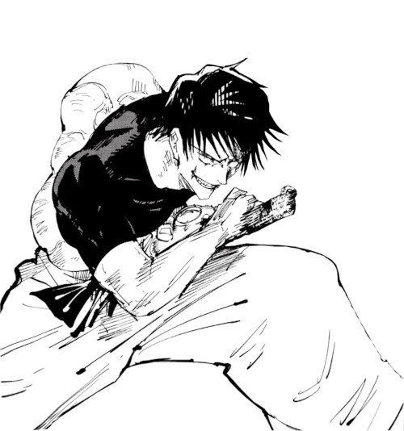
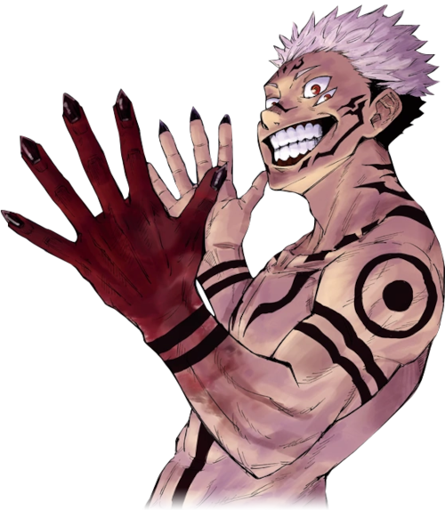
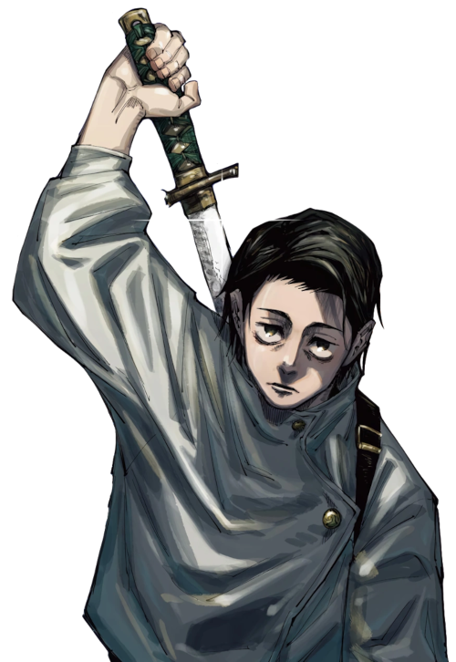

O mais forte possui inúmeros combates em seu histórico, porém somente duas pessoas conseguiram causar danos significativos nele...
Um dos seus primeiros confrontos:
TOJI FUSHIGURO

O CONFRONTO CONTRA TOJI:
O confronto entre Toji e Gojo ocorre durante o arco da Escola Kyoto Goodwill Event, onde a Escola de Jujutsu de Tóquio e a Escola de Kyoto se enfrentam em uma competição amigável.
Toji aparece como um dos antagonistas, e sua missão é eliminar os jujutsu sorcerers de Tóquio, incluindo Satoru Gojo.
Quando Toji confronta Gojo, ele imediatamente mostra seu poder formidável, sendo capaz de lutar de igual para igual com o jujutsu sorcerer mais poderoso do mundo.
No entanto, Gojo também é excepcionalmente poderoso, e os dois envolvem-se em uma batalha épica que envolve técnicas de maldiçōes, feitiçaria e combate corpo a corpo.
A batalha é intensa e cheia de reviravoltas, com ambos os lados usando todas as suas habilidades para ganhar vantagem.
Gojo demonstra sua técnica "Limitless" e sua habilidade incrível de manipular o espaço e o tempo, enquanto Toji usa sua força bruta e habilidades de combate incomparáveis. Resultado:
No final do confronto, Gojo prevalece sobre Toji, mas a batalha deixa uma impressão duradoura. Toji é gravemente ferido, mas consegue escapar.
Enquanto Gojo sai vitorioso, Toji deixa claro que há ameaças significativas no mundo de "Jujutsu Kaisen" que não se encaixam nos moldes tradicionais de jujutsu sorcery.
O Segundo Desafiante:
RYOUMEN SUKUNA

O CONFRONTO CONTRA RYOUMEN SUKUNA:
O confronto entre Gojo e Sukuna ocorre durante o arco da prisão de Shibuya, quando Sukuna é libertado temporariamente e começa a causar destruição na área de Shibuya.
Apenas Gojo é considerado uma ameaça à altura de Sukuna, então ele é chamado para enfrentar a maldição.
A batalha é espetacular e intensa, com Gojo usando sua técnica "Limitless" para manipular o espaço e o tempo, enquanto Sukuna demonstra seu poder devastador e sua habilidade de usar maldições de grau especial.
Os dois se envolvem em uma luta de alta velocidade, com técnicas extraordinárias e feitiçarias poderosas. Resultado:
Durante a luta, Gojo demonstra sua habilidade suprema e parece ter a vantagem. Ele até consegue selar Sukuna temporariamente usando uma técnica especial chamada "Cursed Technique Reversal: Red."
No entanto, Sukuna revela seu plano secreto e, com a ajuda de um aliado inesperado, consegue escapar do selo de Gojo e deixá-lo indefeso.
O confronto entre Gojo e Sukuna termina com Sukuna ostensivamente ganhando a batalha, embora Gojo não seja morto.
A luta destaca a incrível força e habilidade de ambos os personagens, deixando claro que Sukuna é uma ameaça formidável e que Gojo é o único que pode enfrentá-lo de igual para igual.
O Prodigio Amaldiçoado:
YUTA OKKOTSU

O CONFRONTO CONTRA SUGURU GETO:
Tsuguru Geto é um poderoso antagonista na série, conhecido por suas habilidades formidáveis e planos para transformar o mundo usando maldições.
Quando Yuta e Geto se confrontam, é uma batalha intensa e emocionante. Poderes de Yuta Okkotsu: Sukuna Ryoumen: A principal fonte de poder de Yuta é sua conexão com Sukuna Ryoumen, a maldição mais poderosa conhecida. Como o hospedeiro de Sukuna,
Yuta pode acessar e canalizar o poder do Rei das Maldições, tornando-se incrivelmente poderoso. Técnica Amaldiçoada de Rika: Yuta também domina a técnica amaldiçoada de Rika Orimoto, sua amiga falecida.
Essa técnica permite que ele manipule objetos e ataque maldições com grande destreza, adicionando um aspecto único ao seu arsenal. Durante o Confronto:
Durante a luta com Geto, Yuta demonstra seu poder destrutivo em várias formas: Força Bruta: Yuta exibe uma incrível força física, capaz de enfrentar maldições e desferir golpes poderosos. Sukuna's Techniques: Yuta acessa as habilidades de Sukuna, incluindo seu domínio sobre maldições e suas técnicas devastadoras.
Isso inclui a capacidade de manipular objetos e maldições com facilidade. Técnica Amaldiçoada de Rika: A técnica de Rika também é usada de forma eficaz durante a batalha, aumentando ainda mais o poder de Yuta. Combate Estratégico: Yuta mostra habilidades de combate tático, usando sua inteligência para enfrentar Geto e suas maldições de maneira eficiente.
Embora o confronto entre Yuta Okkotsu e Tsuguru Geto seja um desafio formidável, Yuta demonstra um poder destrutivo impressionante,
graças à sua conexão com Sukuna e suas habilidades únicas.
Seu potencial como um jujutsu sorcerer em crescimento e como hospedeiro de Sukuna faz dele um personagem central na série,
e seu poder de combate só tende a crescer à medida que a história progride.